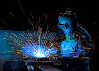

Introduction
Welding is a transformative process that has played a pivotal role in shaping the modern world. From ancient techniques of forge welding to cutting-edge technologies like laser welding, the history of welding is a journey through time that mirrors humanity's relentless pursuit of innovation and progress. Who first invented welding? Let’s take a look.
Tools of the Trade
.png)
.png)
.png)
.png)
When Did Welding Begin?
The origin of welding can be traced back to Egypt, where early metalworkers discovered the art of joining metals through heat and pressure. The oldest form of welding, forge welding, dates to the Bronze Age, around 3,000BC. This process involved heating metal pieces to a malleable state and then hammering or pressing them together to form a bond.
The Middle Ages and the Renaissance
During the Middle Ages, welding techniques continued to evolve. The advent of water-powered hammers and improved furnaces facilitated more efficient forge welding. As metalworking skills progressed, craftsmen began to experiment with different alloys, expanding the range of materials that could be joined.
The Industrial Revolution and the Rise of Arc Welding
The 19th century marked a significant turning point in the history of welding with the onset of the Industrial Revolution. The demand for more efficient and rapid manufacturing processes led to the development of new welding methods. In 1800, Sir Humphry Davy discovered the electric arc, a crucial breakthrough that laid the groundwork for modern arc welding.
The Birth of Oxy-Acetylene Welding
While arc welding was gaining momentum, another revolutionary welding method was emerging – oxy-acetylene welding.
Laser Welding and Electron Beam Welding
Laser welding has become a popular method for high-speed, precision welding in industries such as electronics, aerospace, and medical devices. The use of laser beams allows for non-contact welding with minimal heat-affected zones, making it ideal for delicate components. Electron beam welding (EBW) has found applications in industries requiring high-depth penetration and narrow heat-affected zones. EBW utilizes a focused beam of high-velocity electrons to generate the welding arc, making it suitable for materials with high melting points.
Challenges and Future Prospects
While welding has come a long way from its humble beginnings, challenges persist in the form of environmental concerns, safety issues, and the need for continuous improvement. Efforts are being made to develop more sustainable welding processes, reduce energy consumption, and minimize the environmental impact of welding operations.
